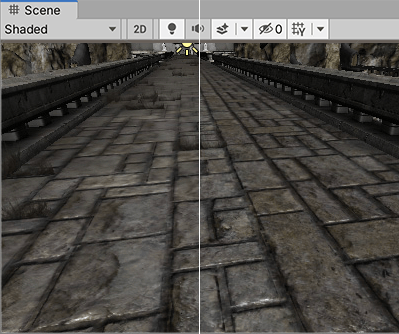

纹理是一种位图图像。您可以在数字内容创作应用程序（例如 Photoshop）中创建纹理，然后将其导入 Unity。
在 3D 项目中，Unity 将 Assets 文件夹中的图像和电影文件导入为纹理。在 2D 项目中，Unity 将 Assets 文件夹中的图像和电影文件导入为精灵。
只要图像满足指定的大小要求，Unity 便可以导入并优化图像，以供游戏使用。这一点可以扩展到多层 Photoshop PSD 或 TIFF 文件。
要在 Unity 中将图像和电影文件导入为纹理和精灵，请执行以下操作：
1.在 Project 窗口中选择图像文件。 2.在 Inspector 中，设置 Texture Import Settings。 3.单击 Apply 按钮以保存更改。 4.要在项目中使用导入的资源，请执行以下操作： * 对于 3D 项目，创建材质并为新材质分配纹理。 * 对于 2D 项目，请使用 Sprite Editor。
以下主题提供了关于导入纹理时的建议，并详细介绍了所有限制：
从包含 HDR 信息的 EXR 或 HDR 文件导入时，纹理导入器会自动为输出纹理选择正确的 HDR 格式。此格式会根据您要构建的目标平台自动更改。
理想情况下，纹理尺寸大小应该是每边为 2 的幂（即 2、4、8、16、32、64、128、256、512、1024、2048 像素 (px)，以此类推）。纹理不必是正方形；也就是宽度可与高度不同。
在 Unity 中可以使用 NPOT（非 2 的幂）纹理大小。但是，NPOT 纹理大小通常需要稍微多一点的内存，并且 GPU 的采样速度可能更慢，因此，只要有可能，最好使用 2 的幂大小以提高性能。
如果平台或 GPU 不支持 NPOT 纹理大小，Unity 会对纹理进行缩放和填充以达到下一个 2 的幂大小。此过程会使用更多内存并使加载速度变慢（尤其是在较旧的移动设备上）。通常，只应将 NPOT 大小用于 GUI 用途。
您可以使用纹理导入器的 Advanced 部分中的 Non Power of 2 选项在导入时放大 NPOT 纹理资源。
注意：特定平台可能会限定最大纹理尺寸大小。对于 DirectX，不同功能级别的最大纹理大小如下：
| 图形 API/功能级别 | 最大 2D 和立方体贴图纹理尺寸大小（像素） |
|---|---|
| DX9 着色器模型 2（2004 年前的 PC GPU）/OpenGL ES 2.0 | 2048 |
| DX9 着色器模型 3（2006 年前的 PC GPU）/Windows Phone DX11 9.3 级别/OpenGL ES 3.0 | 4096 |
| DX10 着色器模型 4/GL3（2007 年前的 PC GPU）/OpenGL ES 3.1 | 8192 |
| DX11 着色器模型 5/GL4（2008 年后的 PC GPU） | 16384 |
注意：
Mipmap 是图像逐渐减小版本的列表。如果纹理使用 Mipmap 时，当纹理远离摄像机时，Unity 会自动使用较小版本的纹理。这样可以降低渲染纹理的性能成本，而且不会造成明显细节损失。Mipmap 还可以减少纹理锯齿和闪烁。
启用 Mipmap 会让内存使用量增加 33%，因此，仅当纹理与摄像机之间的距离将发生改变时，才应该对纹理使用 Mipmap。如果纹理与摄像机之间的距离不会改变（比如用于 UI、天空盒等等对象的纹理），则不应对这种纹理使用 Mipmap。
可以使用纹理串流 (Texture Streaming) 来控制 Unity 在运行时加载 Mipmap 的方式。
法线贴图由法线贴图着色器用于使简单多边形模型看起来好像包含更多细节。Unity 使用编码为 RGB 图像的法线贴图。您也可以选择从灰度高度贴图图像生成法线贴图。
Alpha 贴图是仅包含 Alpha 信息的纹理。可以使用 Alpha 贴图对材质应用不同级别的透明度。
在 Unity 中，可以通过如下方式来创建 Alpha 贴图：创建在 Alpha 通道中包含信息的纹理，或创建灰度纹理并将灰度值转换为 Alpha 值。
有关更多信息，请参阅 Alpha Source 纹理导入设置的文档。
如果您想创建地形，通常要使用主纹理来显示地形的各个区域，如草地、岩石和沙地。如果地形很大，可能会变得非常模糊。细节纹理通过在靠近主纹理时淡入小细节来隐藏这一情况。
绘制细节纹理时应注意，中性灰色不可见，白色使主纹理变亮两倍，黑色使主纹理完全变黑。
请参阅有关辅助贴图（细节贴图）的文档以了解更多信息。
要将纹理用于反射贴图（例如在反射探针或立方体贴图的天空盒中），请将 Texture Shape 设置为 Cube。请参阅有关立方体贴图纹理的文档以了解更多信息。
各向异性过滤可提高从掠射角观察时的纹理质量。此渲染在显卡上非常消耗资源。提高各向异性水平通常对于地面和地板纹理而言是一种很好的做法。请使用 Quality 设置强制对所有纹理进行各向异性过滤或完全禁用该功能。

Unity 可读取以下文件格式：
注意，Unity 可以导入多层 Photoshop PSD 或 TIFF 文件，Unity 在导入这些后会自动展平，这样就不会在游戏中造成大小损失。这种展平操作发生在 Unity 中导入的数据，而不是文件本身，因此您可以继续保存和导入 PSD 或 TIFF 文件，以原生方式使用这些文件类型时不会丢失任何工作。这很重要，因为只需每个纹理的一个副本即可在不同的应用程序（Photoshop、3D 建模应用程序以及 Unity）中使用纹理。